 
Tickets are all sold out!
Electric Picnic tickets for next year’s festival went on sale this morning at 9am and sold out in just 15 minutes; record time.
For the first time ever in the festival’s 15 year history, tickets sold out months in advance of the line-up being revealed, which is testament to the enduring popularity of Ireland’s biggest music and arts festival.
TRENCHTOWN
A truly immersive experience Trenchtown transports festival goers to idyllic islands, a cultural exchange encouraging its visitors to experience a unique fusion of Jamaican, African and Celtic roots and customs.
Elsewhere in Trenchtown, exotic cuisine, tropical cocktails, blue mountain coffee, interactive drum & dance workshops and many more surprises await to be discovered. Trenchtown is more than a festival arena - It’s a way of life!
BODY&SOUL
Body&Soul is an Irish creative collective, with a heart-shaped mind and a cutting-edge soul. Body&Soul brings together a collaboration of artists, musicians, poets and performers in a shimmering, chilled-out, enchanted environment - an eclectic mix of electronic and visual arts from homegrown talent, emerging artists and a selection of international guests.
THEATRE OF FOOD
On a beautifully curated stage in the middle of Mindfield, Theatre of Food is where the most talented food lovers in Ireland get all funky, all weekend long. With inspiring food demonstrations, wacky cocktail masterclasses, mind-boggling food discussions and lots more, Theatre of Food puts the theatrics into Ireland’s contemporary food culture.